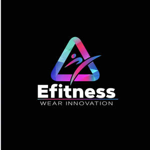

Trade Mark Journal No.2025/051 19 December 2025
UK00004306472 5 December 2025 (18,25)

- Class 18
- Holdalls for sports clothing; Bags for sports clothing; Bumbags; Carriers for suits, shirts and dresses; Carriers for suits, for shirts and for dresses; Towelling bags; Briefcases [leatherware]; Backpacks [rucksacks]; Bags for clothes.
- Class 25
- Sportswear; Shoes for leisurewear; Men's clothing; Leisurewear; Knitwear [clothing]; Gymwear; Ready-to-wear clothing; Casualwear; Triathlon clothing; Swimwear; Clothing for cycling; Menswear; Footwear for sport; Footwear for use in sport; Sports garments; Men's underwear; Jackets being sports clothing; Athletic clothing; Sport shirts; Surfwear; Clothing for sports; Sports clothing; Clothes for sport; Maillots [hosiery]; Golf footwear; Leisure clothing; Athletics footwear; Leisure footwear; Sports clothing [other than golf gloves]; Knitwear; Athletic footwear; Jerseys [clothing]; Footwear for sports; Sports footwear; Outerwear; Footwear for snowboarding; Sneakers [footwear]; Denims [clothing]; Clothing for gymnastics; Tennis shirts; Clothing for leisure wear; Gloves for apparel; Footwear; Shorts [clothing]; Clothing; Moisture-wicking sports shirts; Golf clothing, other than gloves; Sweat-absorbent underclothing [underwear]; Jogging bottoms [clothing]; Clothing for skiing; Sports shirts; Casual footwear; Beach footwear; Clothes for sports; Casual clothing; Soccer shirts; Tracksuits; Tennis pullovers; Footwear for men; Footwear for women; Jackets [clothing]; Playsuits [clothing]; Men's dress socks; Beachwear; Windproof clothing; Foulards [clothing articles]; Rugby shirts; Cashmere clothing; Clothing for cyclists; Beach clothing; Gabardines [clothing]; Woolen clothing; Sweat-absorbent underwear; Oilskins [clothing]; Sport shoes; Sweat-absorbent underclothing; Knitted clothing; Bandeaux [clothing]; Rainproof clothing; Women's clothing; Corsets [clothing, foundation garments]; Parts of clothing, footwear and headgear; Golf shirts; Underclothing (Anti-sweat -); Anti-sweat underclothing; Tennis dresses; Polo shirts; Embroidered clothing; Bottoms [clothing]; Rainwear; Quilted jackets [clothing]; Casual shirts; Jogging sets [clothing]; Trainers [footwear]; Men's socks; Sports jackets; Handball shoes; Rugby shoes; Windcheaters; Cycling shoes; Underwear (Anti-sweat -); Anti-sweat underwear; Moisture-wicking sports pants; Garments for protecting clothing; Maternity clothing; Men's and women's jackets, coats, trousers, vests; Basketball sneakers; Sneakers; Lingerie; Jogging outfits; Leggings [trousers]; Maternity leggings; Tights; Leggings [leg warmers]; Denim pants; Capri pants; Bib tights; Dress pants; Trousers shorts; Footless tights; Pants; Yoga pants; Woollen tights; Jeans; Corduroy pants; Maternity pants; Leather pants; Sweatpants; Culottes; Fleece shorts; Maternity shorts; Camouflage pants; Bodysuits; Nappy pants [clothing]; Turtleneck shirts; Culotte skirts; Athletic tights; Trousers; Shorts; Gussets for tights [parts of clothing]; Booties; Bib shorts; Legwarmers; Thong sandals; Jogging pants; Chino pants; Corduroy trousers; Waterproof pants; Turtleneck tops; Stretch pants; Baselayer bottoms; Bralettes; Trousers of leather; Trouser socks; Dress shirts; Pajama bottoms; Footless socks; Cardigans; Turtleneck sweaters; Yoga shirts; V-neck sweaters; Denim jackets; Leather dresses; Romper suits; Tracksuit bottoms; Yoga bottoms; Turtleneck pullovers; Sweatshorts; Leotards; Yoga socks; Dress shoes; Long-sleeved shirts; Weatherproof pants; Sleeveless pullovers; Babies' pants [clothing]; Lace boots; Corduroy shirts; Headbands [clothing]; Headbands for clothing; Gym shorts; Sleeveless jackets; Tracksuit tops; Baselayer tops; Blouses; Warm-up pants; Baby pants; Sweat pants; Stockings (Sweat-absorbent -); Sweat-absorbent stockings; Stockings [sweat-absorbent]; Horse-riding pants; Tank-tops; Sweat-absorbent socks; Cycling pants; Vest tops; Tops [clothing]; Yoga tops; Socks and stockings; Waterproof trousers; Denim coats; Boy shorts [underwear]; Fleece tops; Coats of denim; Snow pants; Sweatshirts; Ski pants; Tunics; Sandals; Yoga shoes; Blue jeans; Anklets [socks]; Snowboard trousers; Men's sandals; Lounge pants; Short-sleeved T-shirts; Skirts; Sleeveless jerseys; Cargo pants; Knit shirts; Jumper dresses; Pinafore dresses; Maternity shirts; Sports pants; Suede jackets; Casual trousers; Camisoles; Gussets for leotards [parts of clothing]; Pirate pants; Sundresses; Sleeved jackets; Sweat shorts; Maternity dresses; Knitted underwear; Short-sleeve shirts; Sweatsuits; Open-necked shirts; Hoodies; Anoraks [parkas]; Jumpsuits; Waistcoats [vests]; Hooded sweat shirts; Balaclavas; Hooded sweatshirts; Shirts for suits; Short-sleeved shirts; Pyjamas; Shirts; Jackets (Stuff -) [clothing]; Stuff jackets [clothing]; Uniforms; Camouflage shirts; Trenchcoats; Hooded pullovers; Chaps (clothing); Jackets; Football shirts; Tee-shirts; Jerseys; Cagoules; T-shirts; Warm-up jackets; Blazers; Jumpers [pullovers]; Waistcoats; Wristbands [clothing]; Sweat jackets; Camouflage jackets; Sweat shirts; Pyjamas [from tricot only]; Parkas; Fleece jackets; Jockstraps [underwear]; Overcoats; Sheepskin jackets; Overshirts; Trousers for sweating; Pullovers; Hoods [clothing]; Athletic uniforms; Knit jackets; Sweatbands; Collared shirts; Clothes; Sports jerseys.
Erika Figueroa Cedeno